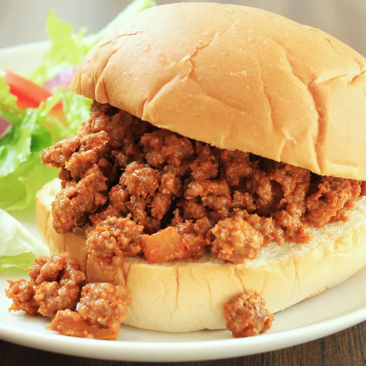

Sloppy Joe

Crispy Delight
A sandwhich consisting of ground beef and onions in a tomato-based sauce served on a hamburger bun.
Ingredients
- Lean grund beef
- Onion
- Green bell pepper
- Ketchup
- Brown sugar
- Yellow mustard
- Garlic powder
- Salt and ground black pepper
- Hamburger buns
Steps
- Heat a large skillet over medium heat. Cook and stir lean ground beef in the hot skillet until some of the fat starts to render, 3 to 4 minutes. Add onion and bell pepper; continue to cook until vegetables have softened and beef is cooked through, 3 to 5 more minutes.
- Stir in ketchup, brown sugar, mustard, and garlic powder; season with salt and pepper. Reduce heat to low and simmer for 20 to 30 minutes.
- Divide meat mixture evenly among hamburger buns.